ќдин
ƒекабрь 2004 Ч февраль 2005
декабрь 2004
ќдину уже больше двух лет. ќн гораздо больше спит, выбира€ места потеплее и пом€гче, а не поукромнее, как раньше... Ќо активно шлепает ластами по комнате, когда бодрствует.
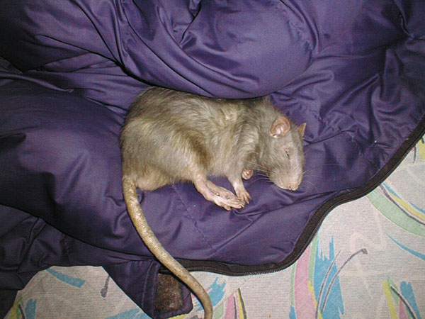
Ч —пальный мешок Ч это правильное изобретение.
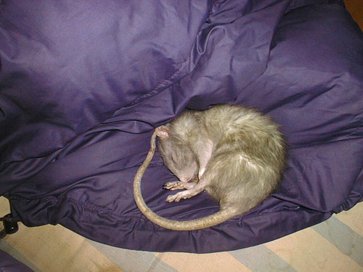
—нитс€ молодость.
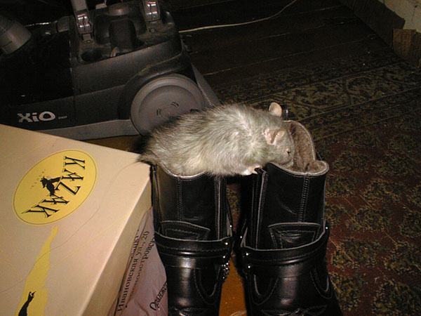
Ч Ќовые сапоги! ¬кусно пахнут!
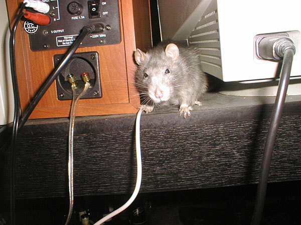
Ч ≈сли оставл€ть между аппаратурой щели, то там могут завестись крысы. ¬от мен€ завели...
€нварь 2005
ќдин уже старенький... ” крыс год жизни эквивалентен приблизительно 30 человеческим.
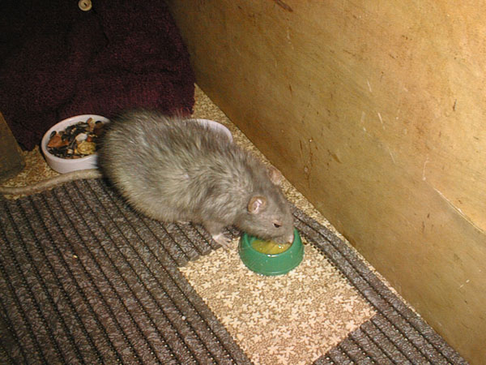
Ч ѕерепелиные €йца Ч это вкусно!
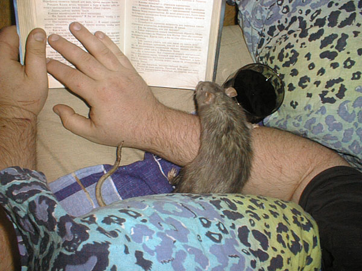
Ч „его читаешь?
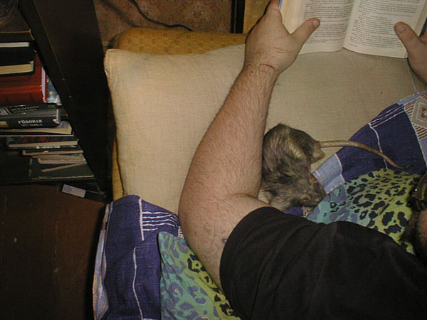
Ч Ќе интересно. я тут посплю р€дышком...
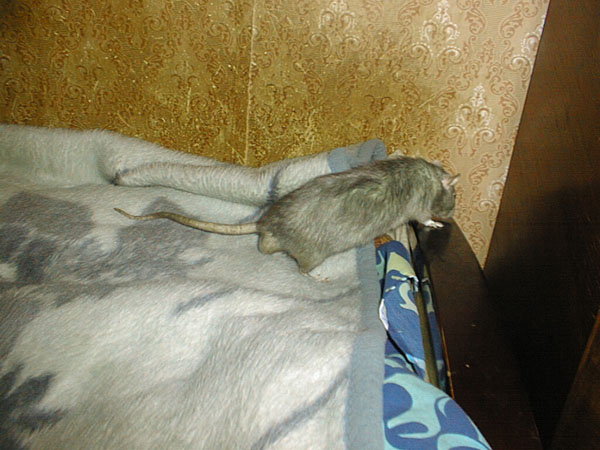
Ч ј вот там, за шкафом, € любил проводить врем€, когда был помоложе...
февраль 2005
ќдину два года и четвертый мес€ц...
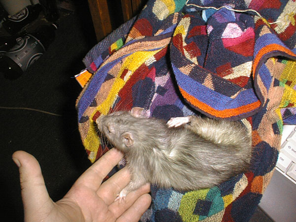
Ч ѕока могу сам чесатьс€ Ч € еще не старик! ƒай-ка оперетьс€...
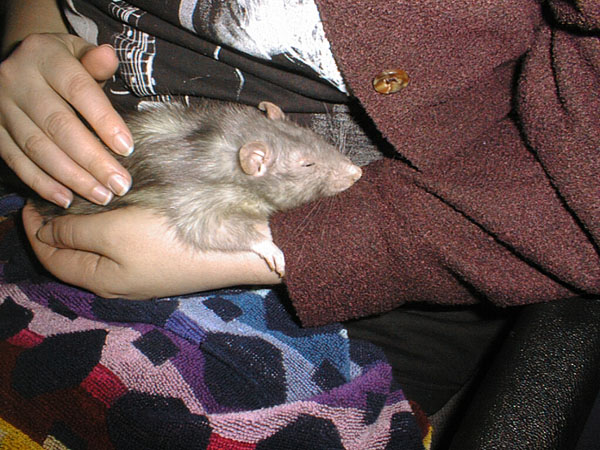
ƒоверие
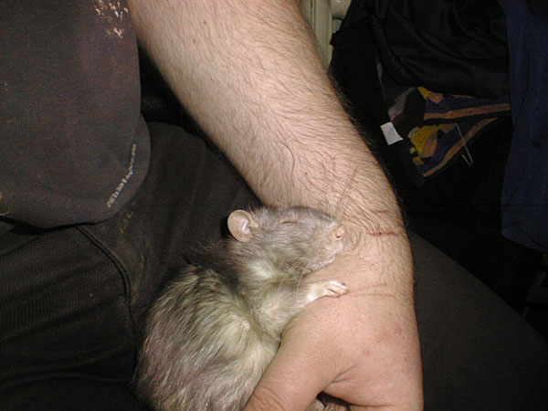
ƒай руку, друг...